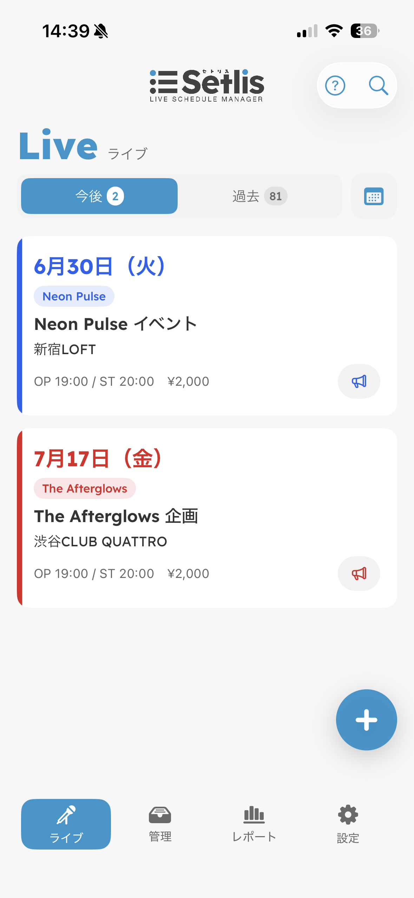
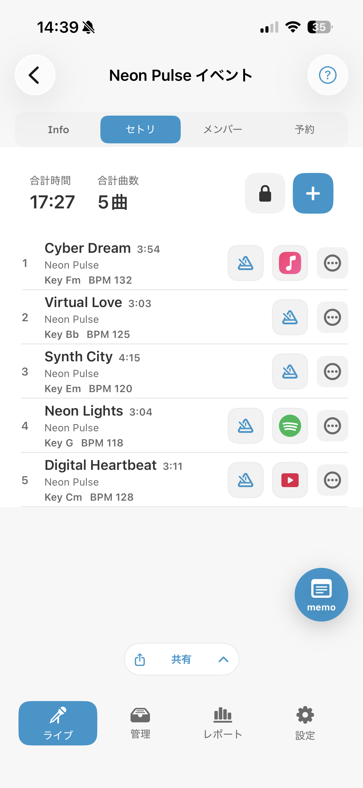
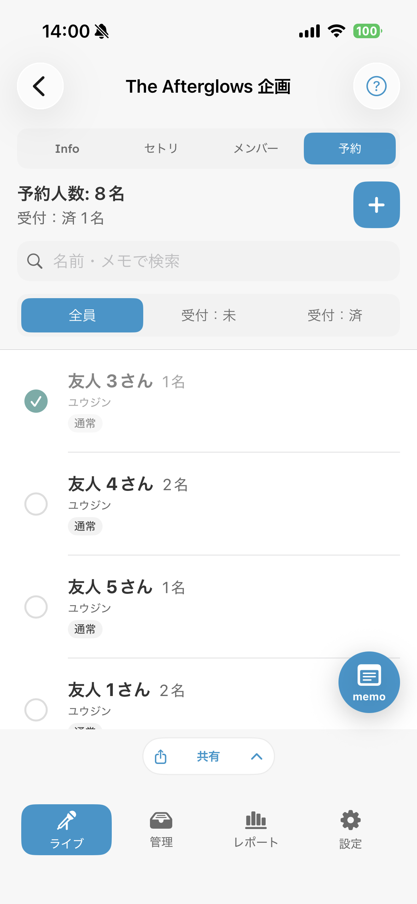
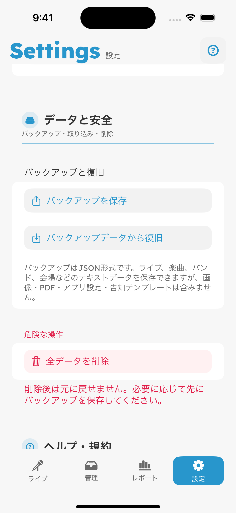
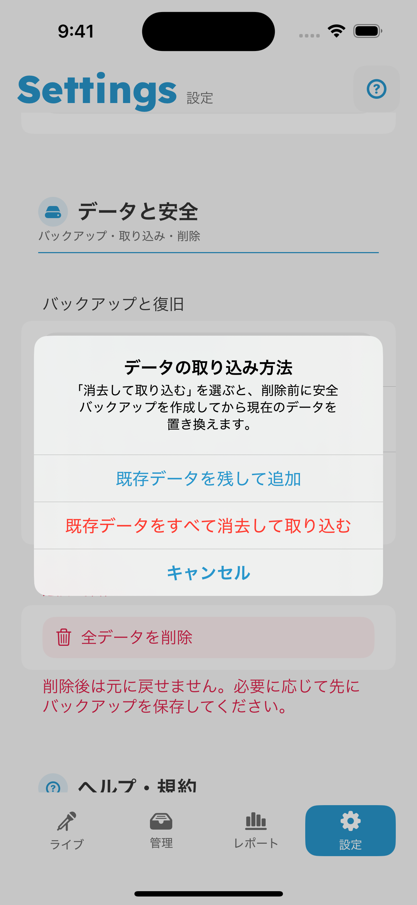
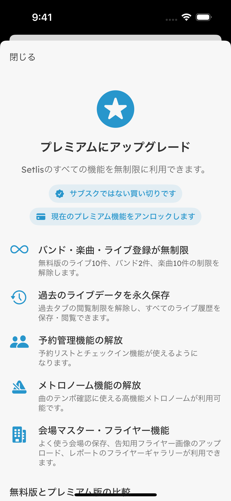

今後・過去のライブ、カレンダー、ライブ詳細を管理します。
OFFICIAL USER GUIDE
Setlis
オンラインマニュアル
ライブの予定作成から当日のセトリ・予約管理、活動の振り返り、機種変更に備えたバックアップまでを説明します。
対応バージョン 1.3.1

OVERVIEW
はじめに
Setlisは、バンド活動に必要な情報をライブ単位でまとめるアプリです。画面下部の4つのメニューから操作します。
最初は「管理」から
バンドと楽曲を先に登録すると、ライブやセトリを作るたびに同じ内容を入力せずに呼び出せます。会場は手入力でも利用できます。
- 1
バンドと楽曲を登録
画面下部の「管理」を開き、出演バンドと演奏曲を登録します。
- 2
ライブを作成
「ライブ」の追加ボタンから、日程、会場、開場・開演時間などを入力します。
- 3
セトリと予約を準備
作成したライブを開き、「セトリ」「メンバー」「予約」を順に整えます。
MANAGE
管理メニュー

よく使う情報を登録する
- バンド
- バンド名、メンバー名、担当パート、表示色などを登録します。
- 楽曲
- 曲名、アーティスト、Key、BPM、演奏時間、ジャンル、譜面・音源リンクを登録します。
- 会場
- 会場名や住所を登録し、地図や経路を開けます。会場マスターへの登録はプレミアム機能です。
楽曲登録のポイント
- 曲名やアーティスト名を入力すると、Apple Music検索による候補が表示されることがあります。候補を使わない場合は候補欄の閉じるボタンで非表示にできます。
- BPMを登録すると、セトリからメトロノームを開けます。
- 譜面URLやYouTube・Spotify・Apple Musicなどの再生リンクを登録すると、楽曲一覧やセトリから直接開けます。
- マスター曲を修正する場合と、特定のライブだけKeyや演奏時間を変える場合を使い分けられます。
LIVE
ライブ管理

ライブを作成する
- 1
追加ボタンを押す
ライブ一覧右下の「＋」を押します。
- 2
基本情報を入力
ライブ名、日付、出演バンド、会場、OPEN・START、チャージを入力します。
- 3
詳細を整える
ライブ詳細の「Info」でリハーサル、フライヤー、告知文などを追加します。
ライブ詳細の4つのタブ
ライブ終了後も修正できます
過去のライブを開き、Info、セトリ、メンバー、予約、ライブメモをあとから修正できます。実際の演奏内容や予約結果に合わせて記録を整えると、レポートの集計も正確になります。
SETLIST
セトリ

曲順を組み立てる
- 追加「＋」から登録済み楽曲、手入力の曲、MC、休憩を追加します。
- 並び替え並び固定を解除し、ドラッグして順番を変更します。並び替え中も左スワイプで削除できます。
- 曲を調整各行のメニューから、そのライブだけのKeyや演奏時間を変更できます。
- 本番で表示プレミアム版では黒背景の全画面セトリを開き、演奏中の曲を追えます。
セトリ内のアイコン
- メトロノーム
- 登録したBPMと拍子でテンポを確認します。プレミアム機能です。
- 音源
- 登録済みのYouTube、Spotify、Apple Musicなどを開きます。
- 譜面
- 登録した譜面URLやPDFを開きます。
- 共有
- コピー、Excel、PDF、JPGから用途に合う形式を選びます。
RESERVATION
予約管理

プレミアム機能
予約受付から当日の確認まで
- 予約を追加予約者名、ふりがな、人数、連絡先、メモ、種別などを登録します。
- 検索・絞り込み名前やメモで検索し、「受付：未」「受付：済」を切り替えます。
- 受付を記録当日は予約行を操作して受付済みにします。画面上部で総予約人数と受付済み人数を確認できます。
- 一覧を共有受付担当者向けに予約一覧をコピー、Excel、PDF、JPGで書き出せます。
個人情報の取り扱い
予約者名、連絡先、メモを含む一覧やバックアップは、信頼できる保存先・共有先だけで扱ってください。
SHARE & EXPORT
共有・書き出し

形式の選び方
- コピー
- メッセージやメモへすぐ貼り付けたいときに使います。
- Excel
- Excelや表計算アプリで編集・集計したいときに使います。
- レイアウトを保ったまま印刷・保管したいときに使います。
- JPG
- 画像としてSNSやメッセージで共有したいときに使います。内容に合わせて縦長の画像が作成されます。
書き出せる内容
| 対象 | 主な内容 | 利用例 |
|---|---|---|
| ライブ情報 | 日時、会場、料金、出演バンド、リハーサルなど | メンバーへの共有、当日資料 |
| セトリ | 曲順、Key、BPM、演奏時間、MC、休憩など | 本番用、スタッフ共有 |
| 予約一覧 | 予約者名、人数、受付状態、メモなど | 受付用、動員確認 |
書き出し後の操作
Excel、PDF、JPGの作成が完了すると、その場でファイルを開くか、ほかのアプリへ共有するかを選べます。
REPORT
レポート
レポートは、ライブの準備状況を確認する画面であり、活動履歴を振り返る画面でもあります。ライブ、セトリ、予約に入力した内容が自動で集計されます。


準備チェック
直近の今後ライブに未設定項目がある場合、要確認として表示します。タップして対象ライブを確認できます。
概要
今後のライブ、完了したライブ、今月のライブ、集計対象の本番ライブ件数を表示します。
月別ライブ件数
直近12か月の本番ライブ件数をグラフで確認します。
Key / BPM分布
セトリからKeyの使用回数と、Slow・Mid・FastのBPM帯を集計します。
バンド別ライブ件数
出演バンドごとに今後・完了・合計のライブ件数をランキング表示します。
多く演奏した曲
過去ライブのセトリから演奏回数と前回の演奏日を表示します。
最近演奏した曲
直近の演奏日が新しい曲を確認できます。
予約の多かったライブ
完了済みライブの予約人数をランキング表示します。
フライヤーギャラリー
登録したライブ画像を新しい順またはランダムで閲覧できます。自動再生は3秒ごとに切り替わります。プレミアム機能です。
集計を正確にするには
終了後のライブも実際のセトリや予約人数に合わせて修正してください。リハーサルは本番ライブ件数の集計対象には含まれません。
BACKUP & RESTORE
バックアップ
機種変更や端末トラブルに備えて、定期的にJSONバックアップを「ファイル」アプリへ保存してください。保存先は「このiPhone内」やiCloud Driveから選べます。

iPhone内へ保存する手順
- 設定を開く画面下部の「設定」を開き、「データと安全」までスクロールします。
- バックアップを保存「バックアップを保存」を押し、個人情報に関する確認を読んで「保存」を押します。
- 保存先を選ぶ「ファイル」の保存画面で「このiPhone内」を開き、保存するフォルダを選びます。
- ファイルを保存
setly_simple_backup_日付.jsonという名前を確認し、右上の「保存」を押します。
「このiPhone内」だけでは端末故障に備えられません
端末の紛失や故障にも備える場合は、保存したJSONをiCloud Drive、Mac、外部ストレージなど端末外にも保管してください。
保存したバックアップを読み込む

- 復旧を開始「設定」→「データと安全」→「バックアップデータから復旧」を押します。
- 取り込み方法を選択現在のデータを残すか、バックアップの内容へ置き換えるかを選びます。
- JSONを選択「ファイル」で「このiPhone内」など保存先を開き、読み込むJSONファイルをタップします。
- 完了まで待つ検証と取り込みが終わり、「インポート完了」と表示されるまでSetlisを閉じないでください。
2つの取り込み方法の違い
既存データを残して追加
現在のライブや楽曲を残したまま、バックアップ内のデータを追加します。複数端末・複数バックアップの内容をまとめたい場合に使います。同じ内部IDのデータは重複登録されません。
既存データをすべて消去して取り込む
現在のデータをバックアップ時点の内容へ置き換えます。Setlisは先にJSONを検証し、現在のデータの安全バックアップを作成してから削除・取り込みを行います。
事前に「全データを削除」する必要はありません
バックアップの内容へ戻したい場合は「既存データをすべて消去して取り込む」を選んでください。設定内の「全データを削除」は、バックアップを使わず完全に初期化するときの操作です。
バックアップに含まれるもの
| 含まれる | 含まれない |
|---|---|
| ライブ、リハーサル、セトリ、MC・休憩 | フライヤーなどの画像 |
| 楽曲、バンド、メンバー、会場 | 登録したPDFや添付ファイル |
| 予約者名、連絡先、人数、メモ、受付状態 | 表示テーマや通知などのアプリ設定 |
| 各データに登録したテキスト・URL | 告知テンプレート |
バックアップファイルには個人情報が含まれます
予約者名、連絡先、メモなどがJSONに保存されます。公開フォルダや不特定多数が閲覧できる場所には置かないでください。
PLANS
無料版とプレミアム

無料版について
無料版でも、ライブ予定の作成、バンド・楽曲の登録、セトリ作成、告知、テキスト共有、レポートの基本表示を試せます。登録件数や一部機能には制限があります。
プレミアムについて
プレミアムはサブスクリプションではなく、1回限りの買い切りです。登録件数の上限を解除し、過去ライブ、予約管理、会場マスター、メトロノーム、Excel・PDF・JPG書き出し、フライヤー関連機能などを利用できます。
| 項目 | 無料版 | プレミアム |
|---|---|---|
| ライブ登録 | 10件まで | 無制限 |
| バンド登録 | 2件まで | 無制限 |
| 楽曲登録 | 10曲まで | 無制限 |
| 会場登録 | 手動入力のみ | 会場タブへ登録可能 |
| 過去ライブ | 一部のみ閲覧 | すべて閲覧 |
| 予約管理 | 利用不可 | 利用可能 |
| 共有出力 | テキストのみ | Excel / PDF / JPG |
| メトロノーム | 利用不可 | 利用可能 |
| 料金方式 | 無料 | 1回限りの買い切り |
購入と復元
- 設定の「アップグレード」からプレミアム画面を開き、App Storeに表示される価格と内容を確認して購入します。
- 機種変更後や再インストール後は、購入時と同じApple Accountで「購入済みの場合は復元」を押します。
- 購入できない場合は通信状態とApp Storeへのサインインを確認し、「商品情報を再読み込み」を試してください。
FAQ
よくある質問
最初に何を登録すればよいですか？
「管理」でバンドと楽曲を登録し、その後「ライブ」で予定を作成するのがおすすめです。登録した内容をライブやセトリで繰り返し使えます。
ライブとリハーサルはどう使い分けますか？
本番はライブとして作成します。ライブに紐づくリハーサルはライブ詳細へ追加でき、リハーサルだけの予定もカレンダーへ登録できます。
過去のライブを修正できますか？
はい。過去のライブを開き、ライブ情報、セトリ、メンバー、予約、メモを修正できます。
同じ曲でもライブごとにKeyを変えられますか？
はい。セトリの曲メニューから「このライブ用に編集」を選ぶと、マスター曲を変えずにそのライブだけ調整できます。
曲順を変更するにはどうしますか？
セトリ上部の並び固定を解除し、行をドラッグします。並び替え中も左スワイプで曲を削除できます。
予約の受付済み・未受付を確認できますか？
予約タブ上部で絞り込み、各予約行の受付状態を切り替えられます。予約管理はプレミアム機能です。
レポートの数字はどこから集計されますか？
登録したライブ、セトリ、出演バンド、予約から集計されます。過去ライブの記録を実際の内容へ修正すると、集計も更新されます。
データは外部サーバーへ自動送信されますか？
Setlisのデータは端末内に保存されます。ユーザー自身が共有やバックアップを実行したときだけ、選択した保存先・共有先へ渡ります。
機種変更では何をすればよいですか？
旧端末でJSONバックアップを作成し、iCloud Driveなど新端末でも開ける場所へ保存します。新端末のSetlisで「バックアップデータから復旧」を選び、そのJSONを読み込みます。
復旧前に現在のデータを削除する必要がありますか？
ありません。「既存データをすべて消去して取り込む」を選ぶと、Setlisが安全バックアップを作成してから置き換えます。
フライヤー画像もバックアップされますか？
いいえ。JSONバックアップには画像、PDF、アプリ設定、告知テンプレートは含まれません。必要な画像やPDFは別途保管してください。
プレミアム購入を新しい端末で使えますか？
購入時と同じApple AccountでApp Storeへサインインし、プレミアム画面の「購入済みの場合は復元」を押してください。
UPDATE HISTORY
更新履歴
v1.3.1
- 過去ライブの情報、セトリ、予約、メンバー、メモをあとから編集できるようにしました。
- その他バグフィックス、安定性の向上を行いました。
v1.3
- プレミアム版の全画面セトリを高密度化しました。
- アプリ内表示へスペイン語を追加しました。
- アップデート後の初回起動時に更新内容を案内するモーダルを追加しました。
v1.2
- プレミアム版のレポート画面にフライヤーギャラリーを追加しました。
- フライヤーを新しい順またはランダムで閲覧できます。
- スワイプで切り替え、タップでライブ情報へ移動できます。
- 自動再生ボタンを押すと3秒ごとのスライドショーに切り替えられます。
- その他バグフィックス、安定性の向上を行いました。
v1.0.6
- 公式ランディングページ、利用規約、プライバシーポリシーの公開URLを更新しました。
- アプリ内のサポート・規約リンクを最新の公開ページに合わせました。
v1.0.5
- Excel互換CSVの書式を見直し、ライブ名・日程・会場を表の上に分けて表示するようにしました。
- セトリCSVで譜面リンクと音源リンクをまとめて含められるようにしました。
- 共有出力の無料版・プレミアム版の違いを比較表に追記しました。
v1.0.4
- 楽曲の並び替え表示をテキスト中心にし、狭い画面でも見切れにくくしました。
v1.0.3
- 楽曲やセトリに、YouTube・Spotify・Apple Musicなどの再生リンクを登録できるようになりました。
- 楽曲情報を更新したとき、今後のライブのセトリにも反映されやすくなりました。
- 告知テンプレートとセトリ編集の使いやすさを改善しました。
v1.0.2
- ライブやリハーサル作成時の日付・時刻入力を見直しました。
- ライブに紐づくリハーサルや、リハのみの予定をカレンダーで見分けやすくしました。
v1.0.1
- 無料プランとプレミアム機能の表示をわかりやすく整理しました。
- 利用規約とプライバシーポリシーを公開用に更新しました。
v1.0
- ライブ予定、リハーサル、セトリ、予約、メンバー管理をまとめて扱える基本機能を公開しました。
- 告知文の作成、Xへの投稿導線、ライブメモ、バンドメンバーのパート入力に対応しました。
- ライブ、楽曲、バンド、会場などのテキストデータをJSON形式でバックアップできるようにしました。